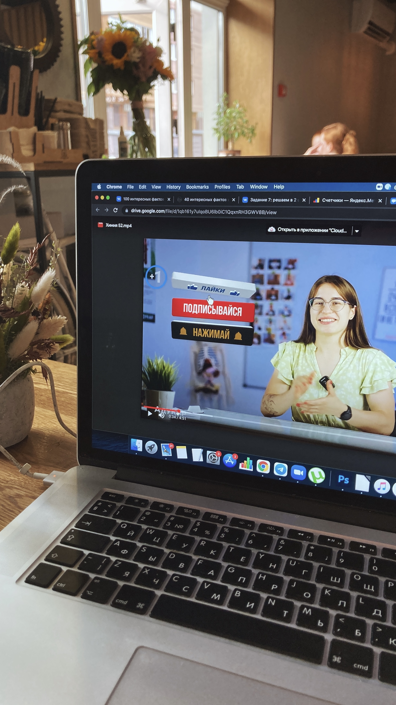

привет-привет! 👋🏻
я — полина.
и это моя история о том,
как химия меня не отпустила.

полина муштукова
Фармацевт в дипломе, педагог в душе. Двигалась и продолжаю двигаться с достаточно простой, но ценной мне миссией: я хочу, чтобы образование не казалось тебе скучной обязаловкой. Чтобы не было страха перед сложными темами, а вместо него — радость от понимания. Чтобы тебе хотелось узнавать новое.
Но прежде чем мы начнём говорить о формулах и реакциях, давай я расскажу, как я здесь оказалась.
как я тут оказалась?
я никогда не мечтала преподавать!
Без шуток, я никогда не планировала становиться педагогом.
В 8 классе я, Поля в очках, легко щёлкала задачки по математике и физике и была уверена, что пойду на экономиста — в 2013 это было ого-ого как модно! Но к 9 классу зачиталась одной книгой по биологии — и любовь к ней переросла в мечту о «помогающей профессии». Так появилось желание стать врачом.
В 9 классе я узнала о Лицее БГУ и загорелась идеей поступить. Конкурс — 16 человек на место! С биологией проблем не было, а вот химии в моей жизни почти не существовало. Но мне повезло: на курсах я встретила потрясающего педагога (привет, Андрей, если ты это читаешь!), который перевернул моё представление о химии (и о том, каким может быть процесс обучения, кстати, тоже). В итоге я поступила — так началась «естественно-научная» глава моей жизни.
Как и полагается настоящему ботанику, которым я себя без зазрения совести считаю (и горжусь этим!), я решила пойти на олимпиадное движение. Выбрала биологию, не химию. Сказать об этом Андрею было сложно. Но тем же вечером, после нашего честного разговора, он отправил мне SMS (да, тогда не было ещё телеграма!):
«Ничего страшного! Уверен, ты точно ещё сделаешь что-нибудь очень крутое для химии!»
Тогда я ещё не осознавала, насколько эти слова важны. Андрей ведь тогда ещё и показал, что любой мой выбор — правильный, потому что мой. А путь может меняться — и это тоже ок.
разворот на 180°
После 11 класса я поступила в университет Хайдельберга в Германии на молекулярную медицину. Бодро переехала за тысячи километров от дома… и вдруг поняла, что мне не нравится. Направление, город, окружение, страна — в общем-то всё! Два года труда, стипендия, ставки всех вокруг — и вдруг осознание, что ты идёшь не туда. Признаться в этом — себе, родителям, миру — было ужасно страшно.
Но сейчас, спустя почти 10 лет, я благодарна себе за этот разворот. Он стал, пожалуй, одним из самых важных решений в жизни. Кстати, тогда я снова задумалась над словами Андрея и очень поддержалась об мысль, что менять траекторию — нормально, если выбор твой.
Я вернулась в Беларусь, самостоятельно подготовилась к ЦТ и поступила на химфак БГУ, фармацевтическая химия. Я проводила достаточно много времени именно в научной деятельности, но так часто слышала от преподавателей, когда в очередной раз что-то объясняла одногруппникам:
«Полина, вам бы не научную работу писать, вам бы преподавать! Подумайте над этим!»
А я только смеялась и отшучивалась. Какой же из меня учитель!
случайное преподавание, которое стало главным
На втором курсе я решила поискать подработку. На тот момент я следила за одним образовательным центром, недолго думая вломилась в личку в VK директору и сказала, что хочу у них работать! Так я попала в образовательный центр «Адукар», где неожиданно для себя… начала учить детишек химии. Отвечала за методологию обучения химии, вела групповые занятия, снимала видеоуроки (кстати, парочка примеров ниже), организовывала ивенты, вела науч-поп паблик в VK. И всё чаще слышала от своих студентов:
«Полина, вы так круто объясняете! Никогда не думал(а), что химию можно понимать, а не просто заучивать!»
📺 мои видеоуроки тех лет
Они грустили, когда курс заканчивался, с радостью делились успехами, приходили за советами — и были для меня невероятным источником вдохновения. Не потому, что у них были высокие баллы на экзаменах, а потому что они стали катализаторами простого, но очень мощного осознания: я могу создавать такое обучение, которое им в кайф. Оно может вовлекать, вдохновлять, вызывать положительные эмоции.
SimpleChem
Эти мысли и поиски привели меня к созданию моего первого проекта — SimpleChem. Мне хотелось не просто «преподавать химию», а построить весь продукт с нуля, собрав воедино все желания студентов и своё представление о студенто-центричном образовании, чтобы помочь ребятам видеть в химии не набор формул, а удивительную науку.
За несколько лет я создала 5 разных образовательных продуктов и помогла более 500 ученикам подготовиться к ЦТ/ЦЭ.
результаты и отзывы учеников
↑ нажми на картинку, чтобы увеличить
а причём тут EdSpire?
А потом образование совсем поглотило меня — я пошла учиться на программу «Проектирование образовательного опыта», которая перевернула мои представления о том, каким может быть обучение. Я посетила немало школ альтернативного образования по миру, много исследовала и несколько лет работала в крупных образовательных командах.
И всё это время меня не покидала мысль: а что если создать такое пространство, которое будет по душе каждому подростку и при этом доступно абсолютно всем?
И совсем недавно, в рамках занятия с ученицей 8 класса, которая так восторженно рассказывала маме, как ей нравятся наши занятия, я подумала:
а почему бы не сделать так, чтобы таких счастливых после химии ребятишек стало больше? намного больше? и бесплатно?
Так и появился EdSpire — рассылка интерактивных уроков химии, которая делает процесс обучения интересным, смешным и очень вовлекающим.
ну и если хочется немного фактов
образование
- Лицей БГУ, хим-био профиль, золотая медаль (2014–2016)
- Химфак БГУ, фармацевтическая химия, красный диплом (2017–2021)
- «Дизайн образовательного опыта», School of Education (2022–2023)
опыт
- Преподаватель химии проекта «Адукар» — методология обучения, групповые занятия, автор курса видеоуроков на YouTube
- Основатель проекта SimpleChem — онлайн-курса по подготовке к ЦТ/ЦЭ по химии: 5 продуктов, 500+ учеников
- А ещё методист в Яндекс Практикуме и Летово, менеджер продукта в Kodland и Ewa
Если ты дочитал(а) до сюда — может, пора попробовать?
начать с первого урока →